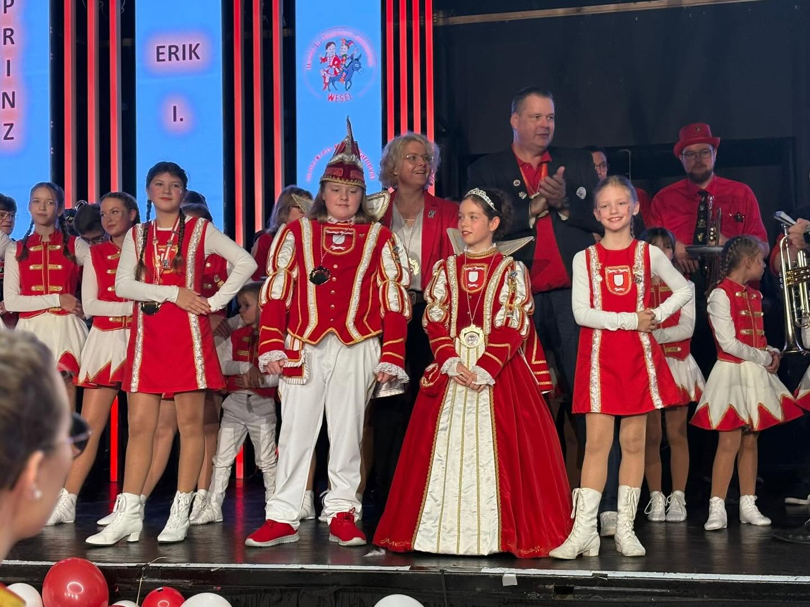
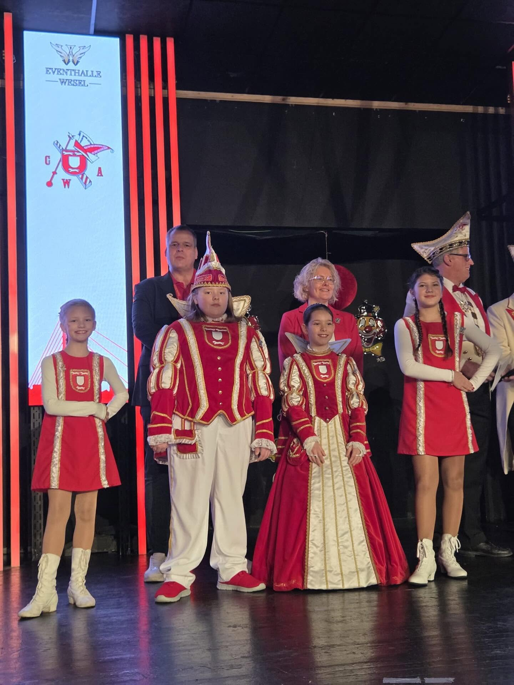
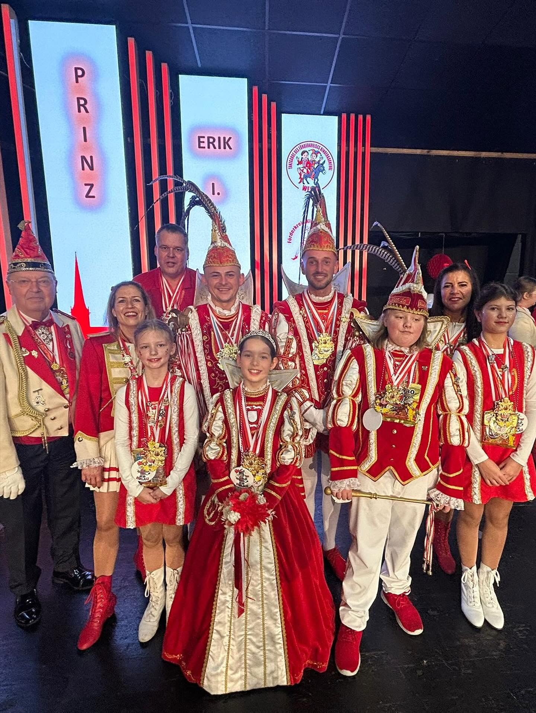
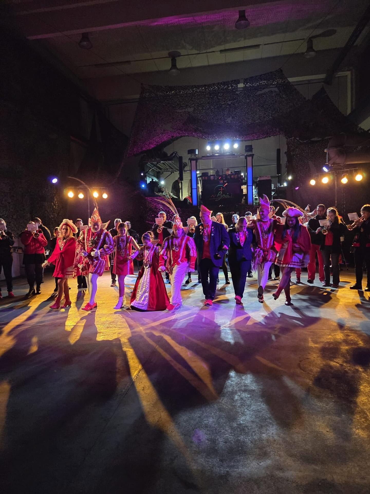
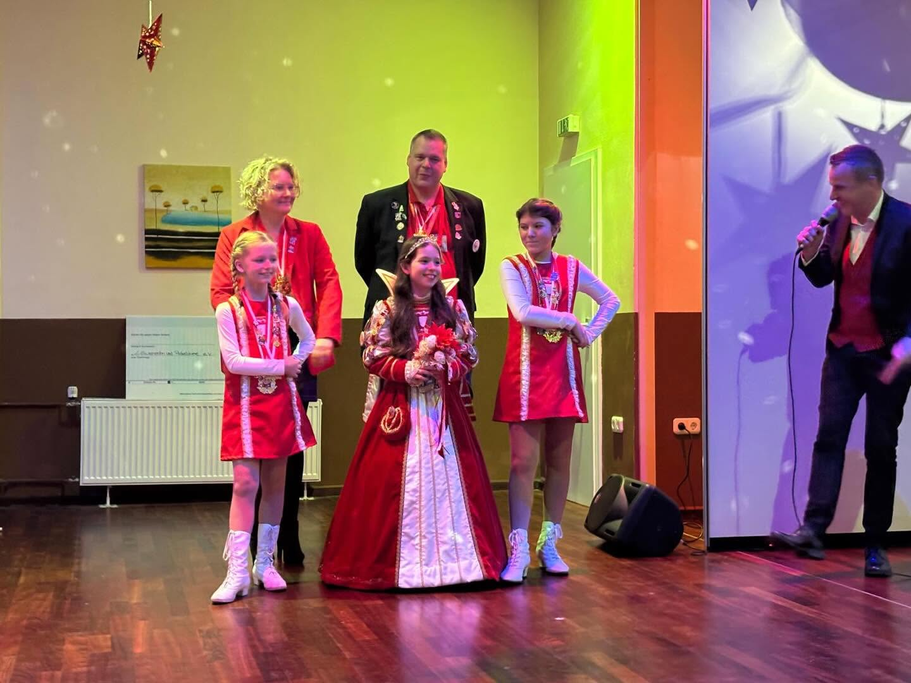
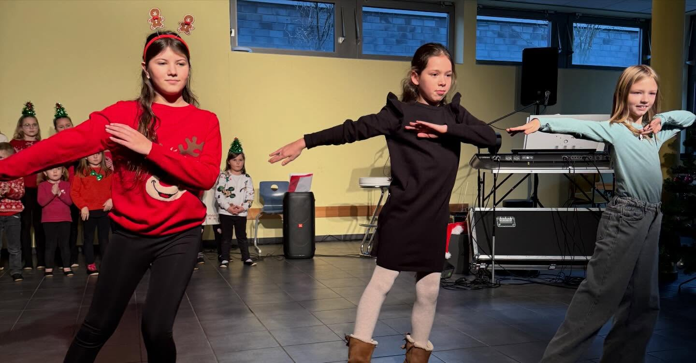
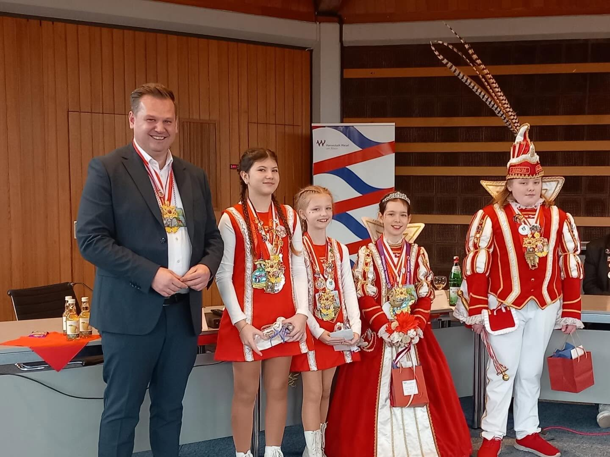
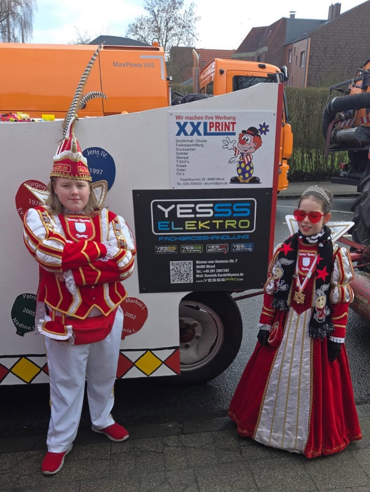
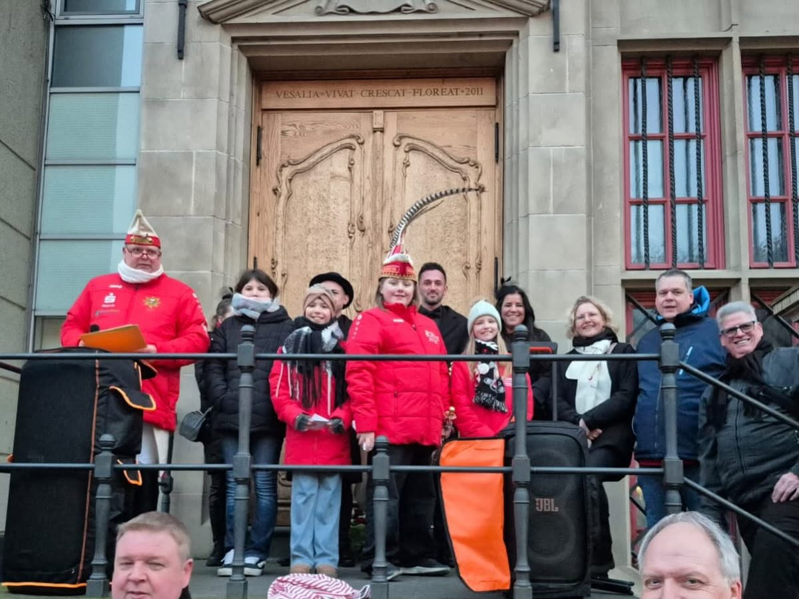

Prinzessin Lara I. & Prinz Erik I.
Mit Pagin Nina und Pagin Elia – eine Session voller Freude, Begegnungen und unvergesslicher Augenblicke.
♫ Sessionslied „Hey Lara“ auf SpotifyVon der Proklamation bis Aschermittwoch
Am 9. November 2025 übernahmen in Wesel wieder die jungen Jecken das Zepter. Mit ihrer feierlichen Proklamation wurden Prinzessin Lara I. und Prinz Erik I. zum Kinderprinzenpaar der Stadt Wesel für die Session 2025/2026. Begleitet von ihren Paginnen Nina und Elia begann eine Reise durch den Weseler Karneval, die sie auf große Bühnen, zu den Vereinen und vor allem zu vielen Menschen führte.

Endlich Prinzessin und Prinz
Die Proklamation war der Moment, auf den alle gewartet hatten. Mit viel Freude, strahlenden Gesichtern und einem begeisterten Publikum begann für Lara I. und Erik I. ihre gemeinsame Regentschaft. Von nun an repräsentierten sie den Kinderkarneval der Stadt Wesel.

Kleine und große Tollitäten
Ein besonderer Moment der Proklamation war das Zusammentreffen mit dem amtierenden Weseler Prinzenpaar Prinz Sebastian I. und Prinz Tim I. Gemeinsam zeigten die Tollitäten, was den Weseler Karneval ausmacht: Generationen feiern miteinander und tragen die Tradition gemeinsam weiter.

Die Session nimmt Fahrt auf
Kaum proklamiert, ging es von Termin zu Termin. Beim 30. Kasernensturm wurde gemeinsam die Kaserne „erobert“, danach folgten Sessionseröffnungen und Veranstaltungen der Weseler Karnevalsvereine. Lara I., Erik I., Nina und Elia waren mittendrin im närrischen Leben der Stadt.

Freude weitergeben
Die Session bestand nicht nur aus Orden, Bühnen und großen Sälen. Bei einer Charity-Gala und vielen weiteren sozialen Terminen wurde deutlich, wie sehr Karneval Menschen verbinden kann. Besuche in Seniorenheimen, Tagespflegen, Kindertagesstätten und im Hospiz gehörten ebenso zur Regentschaft.



Kleine Botschafter ihrer Stadt
Ob Rathausempfänge, Kinderprinzentreffen, der Karnevalisten-Gottesdienst im Xantener Dom, der Närrische Landtag oder Veranstaltungen der CAW-Mitgliedsgesellschaften: Das Kinderprinzenpaar vertrat Wesel bei vielen Begegnungen. Auch der gemeinsame Termin mit Bürgermeister Rainer Benien gehört zu den Erinnerungen dieser besonderen Zeit.

Endlich Rosenmontag!
Nach Wochen voller Termine kam der Tag, auf den alle hingefiebert hatten. Ein paar Regentropfen konnten die Stimmung nicht trüben: Beim Rosenmontagszug wurde gelacht, gefeiert und jeder Augenblick genossen. Für Lara I. und Erik I. war es einer jener Tage, die von einer solchen Session besonders lange bleiben.

Abschied am Aschermittwoch
Beim traditionellen Fackelzug durch die Weseler Innenstadt und der anschließenden Nubbelverbrennung auf dem Großen Markt endete die Session 2025/2026. Hinter den jungen Tollitäten lagen Monate voller Auftritte, Begegnungen, Freundschaften und Erinnerungen.
Eine Krone für eine Session. Erinnerungen für immer.
Prinzessin Lara I., Prinz Erik I., Pagin Nina und Pagin Elia haben den Weseler Kinderkarneval mit Freude und Leben gefüllt. Eine Session endet – doch all die gemeinsamen Momente bleiben.
Zurück zu den Prinzenpaaren →